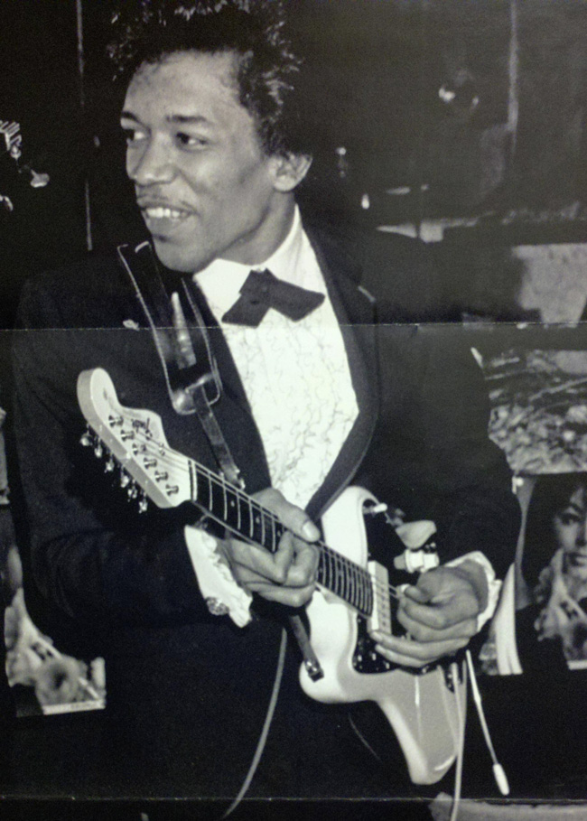
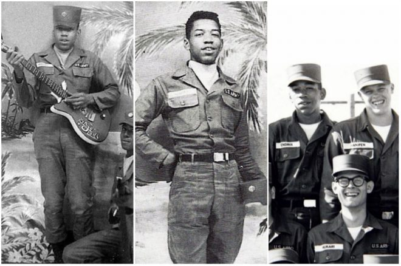

Lysergic Acid - Jimi Hendrix
El 27 de noviembre de 1942 nace Jhony Allen Hendrix hijo primojenito de All y Lucile Hendrix, Los 40 eran tiempos dificiles, la segunda guerra mundial estaba en uno de sus puntos mas altos, todo giraba en torno al conflicto, el destino de niños, mujeres y hombres estaba atado al conflicto. El matrimonio de All y Lucile se veian afectado ya que 3 dias despues su boda All es reclutado por el ejercito y debe marcharse a entrenar, para cuando nace el bebe All esta emplazado en Alabama peleando contra la milicia para tener el permiso de paternidad que le correspondia, no solo eso lo encerraron 2 meses sin juicio para evitar su desercion a seattle, y lucille hace lo posible por educar a su hijo en la ausencia de All, pero la falta de dinero y oportunidades lo hcaen muy dificil lucille recore a la piedad de sus familiares y amigos mudandoze de casa en casa, pasaron 3 años antes de que all pudiera reunirse con su familia, para cuando All logra escapar de las garras de la milicia no tiene forma de contactar a lucille, su unica opcion era buscarla, para cuando la encontro Lucille estaba a punto de dar en adopcion a su pequeño Jhony en adopcion, esta fue la primera vez que All vio a su hijo y decidio cambiarle el nombre por el de James Marshall Hendrix, con la familia reunida todo iba ir a mejor, pues no Lucille y All no eran los negros modelos del siglo, ambos adictos al alcohol y al juego eran incapaces de mantener un trabajo estable para mantener a su famili las discusiones y la violencia eran mas comunes que la comida Jimmy era un niño sensible al que todo esto le afectaba en un rincon de la casa un armario cumplia su funcion como refugio, en 1988 con todo y el drama All y Lucille tuvieron un segundo hijo, Lion Hendrix, Jimmy y Lion se volvieron muy unidos, pese a la precaria situacion, Lion ha dicho en entrevistas, "En lo personal nunca me di cuenta de que eramos pobres, siempre tenia un sandwich o ya saben, algo" y Jimmy era el que usualmente el que proveia de ello, Poco tiempo despues los Hendrix terminaron teniendo otros 3 hijos mas, pero todos los niños nacieron con una dificultad motora o alguna mutacion, All puso en adopcion a cada uno de estos niños argumentando que necesitaban cuidados que ellos no podian proveer, pero Lucille no estaba del todo de acuerdo, para ella perder a sus 3 hijos fue un golpe terrible y la gota que derramo el vaso, Jimmy y Lion vivian con el temor contante del divorcio de sus padres hasta que finalmente ocurrio, All finalmente consiguio un trabajo nocturno pero la separacion de Lucille le pego muy duro, asi que por la noche hacia su mejor intento y por la mañana se enbriagaba, Jimmy y Lion pasaban los dias y las noches solos, los vecinos comensaron a darse cuenta y alertaron a los servicios sociales quienes atendieron el caso pasaban los dias estacionados frente a la casa observando a los hendrix, All le decia a sus hijos que no abrieran la puerta jamas a nadie por un tiempo lograron evadir los servicios sociales pero finalmente terminaron llevandose a Lion a una casa hogar, al principio esto afecto mucho a los chicos que solo se tenian el uno al otro pero hasta eso corrieron con suerte, pues la casa hogar no estaba muy lejos de la casa de los Hendrix, asi que Lion solia escaparse para reunirse con Jimmy bastante seguido, los años pasaban y la situacion de los Hendrix no mejoraba, Jimmy era en realidad un niño sensible y todo esto le afectaba muchisimo, se aislaba en su habitacion escuchando musica todo el dia, años despues le confeso a una de sus novias que de niño fue violado por un hombre con traje de militar (Quiza por eso Jimmy fue un fracaso en la milicia) a mediados de los 50 Jimmy paseaba por los pasillos de la escuela con un palo de escoba, simulando que era una guitarra, esto llamo la atencion de los trabajadores sociales y pasado un año tomando esa escoba Jimmy manda una carta a la escuela solicitando financiacion, alegando que dejarlo sin una guitarra le podria dejar un daño inreparable. aunque este no alla sido su primer instrumento, en realidad fue un ukelele tirado en la basura que arreglo. A la edad de 33 años a Lucille se le diagnostica cirrosis en el higado y muere e 2 de febrero de 1958, All se niega a llevar a sus hijos al funeral, en su lugar sirve 2 tragos de Whiski para Lion y Jimmy y les dice que asi es como un hombre debe enfrentar sus perdidas, Jimmy seguido de esto abandona sus estudios de secundaria y consigue su primer guitarra por 5 dolares fue una guitarra acustica usada, la primera banda en la que estuvo hendrix apenas a la corta edad de de 15 años se llamaba "The bubettones" pero sin una guitarra electrica en las manos la acustica era bastanta inaudible cuando la banda estaba tocando necesitaba una guitarra electrica con urgencias. All era muchas cosas pero amaba a sus hijos honestamente y a mediados del 59 le compra a Jimmy un Supra Ozra color blanco (que se cree que es la razon por que siempre fue su modelo de guitarra favorito y la llevaba a casi todas partes, siendo un hombre que nunca tuvo nada ahora la guitarra lo era todo) con la que dio su primer concierto en un sotano con una banda sin nombre durante este concierto Jimmy es poseido por la guitarra robando el escenario y la atencion el resto de la banda que no entendia lo que estaba pasando lo calificaron de fanfarron y esa misma noche lo hecharon de la banda, pero pronto es adoptado por "The rockets Kings" una banda que tocaba de forma profesional, en uno de los conciertos a jimmy le roban su guitarra pero All le vuelve a comprar otra una Silverstone Than-electro roja.
Es 1961 y la segunda guerra mundial termino, algo aun peor asoma su siniestra cara por la ventana del corazon de los estadounidenses, la guerra de viertnam esta en su apojeo, la guerra fria sirve desayuno de paranoia y locura a ambos bandos J.F. Kennedy toma el mando y muchos dudan de su capacidad de enfrentar la ira de alemania, multiples guerras y el famosisimo tropiezo de la CIA en la baia de cochinos, mientras la union sovietica conquistaba el espacio infinito, el muro de berlin sirve como recordatorio de la estupidez humana la administracion de Kennedy inicia en la entrada de la puerta del infierno, kennedy necesitaba una buena milicia, fuerte, estable y numerosa, para su malo infortunio la corriente pick habia despertado dando luz al movimiento hippie los jovenes no quieren ser reclutados y le pintan el dedo a todo lo que tenga facha de uniforme y botas de combate, la segunda oleada del feminizmo ataca con fuerza,en la segunda guerra mundial si las mujeres sostuvieron la industria sin protestar ni oponerse al comportamiento falocentrico de sus patrones que les pagaban con migajas y las trataba como esclavas en esta ocasion la cosa no seria tan simple, el pais tenia problemas muchos problemas, y a Jimmy hendrix no podria importarle menos, a sus 19 años jimmy enfrentaba cargos por robar un auto, se le dieron 2 opciones enlistarse en el ejercito o enfrentaria varios años en prision y asi el 31 de mayo de 1961 jimmy iba al entrenamiento basico asignado en la divisiond e paracaidastas 101,Jimmy no duro mucho en la vida militar, en una carta a su padre jimmy escribe "En dos semanas no ah habido mas que entrenamiento fisico y ostigamiento y despues cuando vas a la escuela de salto llega el infierno te ponen a pelear con los demas fue mucho para este chico de espiritu sensible y fragil, pasado poco tiempo le envia una segunda cara a su padre diciendo que le envie su guitarra argumentando ahora realmente la necesito, lo obvio paso, cuando llego la guitarra jimmy se obsesiono y descuidaba su puesto y abandonaba sus obligaciones que probocaba el disgusto de sus superiores y la terrible furia de sus compañeros que pagaban sus tonterias, burlas y abusos fisicos eran lo comun dia a dia, en una ocasion robaron su guitarra y la escondieron jimmy soyosaba en el piso rogando que se la regresaran, una noche Billie Cox pasabe en frente de un bar de la armada las cuerdad de Jimmy emanaba un sonido que no podia resistir, Describiendo la ejecucion de Hendrix como un combinacion entre Jollie Hoker y Beethoven, aquella noche Cox no pudo resistirse y tomando un bajo prestado se unio a hendrix en el escenario y comenzaron una sesion de jazz improvisado, semanas despues nacieron "The cashels" En 8 meses hendrix completo su entrenamiento como paracaidista y se le condecoro con la aguila de los paracaidistas, durante una entrevista Hendrix alega que se la habian dado por lesionarnse el tobillo en un salto de practica, Esto quiere decir que jimmy al fin se habia adaptado a la armada?, pues no, Jimmy era un pesimo tirador el solia quedarse dormido durante su servicio, el jefe de peloton declaro en un informe "No tiene ningun interes por la armada en mi opinion el soldado Hendrix nunca alcanzara los estandares necesarios para ser un soldado, creo que el servicio militar se beneficiaria de licenciarle lo antes posible"
Segun los escritores Stefen Rob y Roob Shiver el alcohol se convirtio mas tarde en el asote de su existencia llevandole a tener ataques de ira y aveces violencia fisica tipica, poco tiempo despues de salir de la armada su amigo Cox quien tambien recibio un licenciamiento y aqui nacen los "kin Cashels", durante largo tiempo se mantuvo ahi en esa banda, pero llego un momento donde empezo a pensar que lo limitaban, cuando abandono a la banda la carrera de Hendrix se volvio de menos extraña lleno de un exito fantasma, muchos lo escuchaban pero no lo conocian, por este tiempo de la historia Hendrix habia tocado por primera vez en vivo en television con "Curtis Knight" firmando un contrato por 3 años con ellos. la relacion con esta banda no duro mucho, pero un contrato es un contrato, con esa banda hendrix compone su primer y unico sencillo "hornet nest" donde se le acredita su primera composicion, e resumido bastante su carrera de hendrix antes de llegar a nueva york, habra que entender que en ese tiemo hendrix hacia de todo y para todos, se mantenia poco tiempo en una banda y se iba a una nueva o regresaba a una donde ya habia tocado o se conseguia una nueva, Jimi no conocia la inactividad ni nada parecido a esto, eran mediados de los 60s y el caldo de blues que se gestaba en nueva york emanaba un fuerte aroma, Tan irresistible era que Jimi lo deja todo y se marcha a probar suerte a la ciudad que nunca duerme el imperio lo recibe con una patada en el trasero, sin trabajo ni dinero jimi hace lo que puede para sobrevivir, es gracias a este accidentado primer encuentro con la ciudad de los rascacielos que se cree que las cosas siemmpre le fueron bien a Jimi, pero obviamente tenia que sufrir, tras pasar una semana en la brutal miseria Hendrix es invitado a tocar como artista residente en el cafe "Wha?" de la calle macdog, donde formo a la banda "Jimi James and the blue flames" banda donde por cierto tambien tocaba el que seria mas tarde el fundador de "Landa spirit" El jimmi que conocemos en nuestro tiempos realmente nacio ahi, fue aqui donde el sonido unico y salvaje de Hendrix dio su grito de nacimiento para mas tarde madurar y evolucionar a lo que se conoce como "JIMI HENDRIX EXPERIENCE" a pesar de lo que acabo de decir es triste pero cierto que la banda de JIMI JAMES no duro mucho tiempo los ultimos conciertos de la banda se realizaron el en cafe "Augo go" y es aqui donde empieza la historia que la mayoria ya conoce, en uno de los salones mas populares de la epoca fue donde pisaron fuerte grandes musicos, fe aqui donde la musica latina tendria su epicentro, ahi donde el mismisimo Syd Barret toco con pink floy en el 67, y fue este lugar donde Linda Keith (Novia de Keith Richards, guitarrista de los stones) escucho por primera vez tocar al diablo, hendrix tocaba aquella noche con su amigo Curtis Knight, Linda quedo pasmada del sonido de jimi, aquella noche ella y Jiimi fueron a tomar una copas y ahi es donde empezaria probablemente la amistad mas importante de sus vidas. Chas Chandler guitarrista de " The Animals" quien a mediados de los 60 tenia planeado dejar a la banda ya saben como es esto, si estas en el circuito todos se conocen y daba la casualidad que Linda los conocia a todos de alguna u otra manera y el rumor que corria por las lineas de la industria era que chas buscaba sacar un sencillo, un cover de " Hey joe de Billie Roberts" Jimmi estaba desesperado por grabar algo o al menos dar otro paso y la primera opcion de linda fue Simour Stane un blanco de mente estrecha con el que Brian Jones solia discutir mucho y que por cierto era manager de los Stones, dijo "yo no le veo ningun futuro para este tal Jimi Hendrix" asi que la unica opcion que quedaba fue Chas el buen chas, aunque el tampoco no sedio de inmediato hicieron falta alguna intervensiones y el encanto de Linda para convencer a Chas de ir a escuchar a Jimi tocar, Jimi toco su primera version de "Hey Joe" y chas solo deseo meter a ese negro en un vuelo a inglaterra, el 24 de septiembre de 1966 Jimmy toma un vuelo a inglaterra ese mismo dia firma un contacto con Michael Jefrey antiguo manager de "The animals" y da su primer concierto improvisado en el escenario de "Scotchs an sand changes" conoce a Katie Eichinhand Con quien mantendria una relacion de 2 años y medio, dando principio a su historia en el lugar donde dios fue ejecutado por los dedos del diablo, es inglaterra donde l magia de la experiencia retaba la percepsion de una mafia intolerante. La historia de Jimi Hendrix es ciertamente muy interesante por algun motivo se conocen muchos detalles de su vida aunque su muerte siga plagada de supuestos y conjeturas y teorias conspiranoicas y accidentes improbables. Esta historia continuara en la segunda parte de Jimi Hendrix .